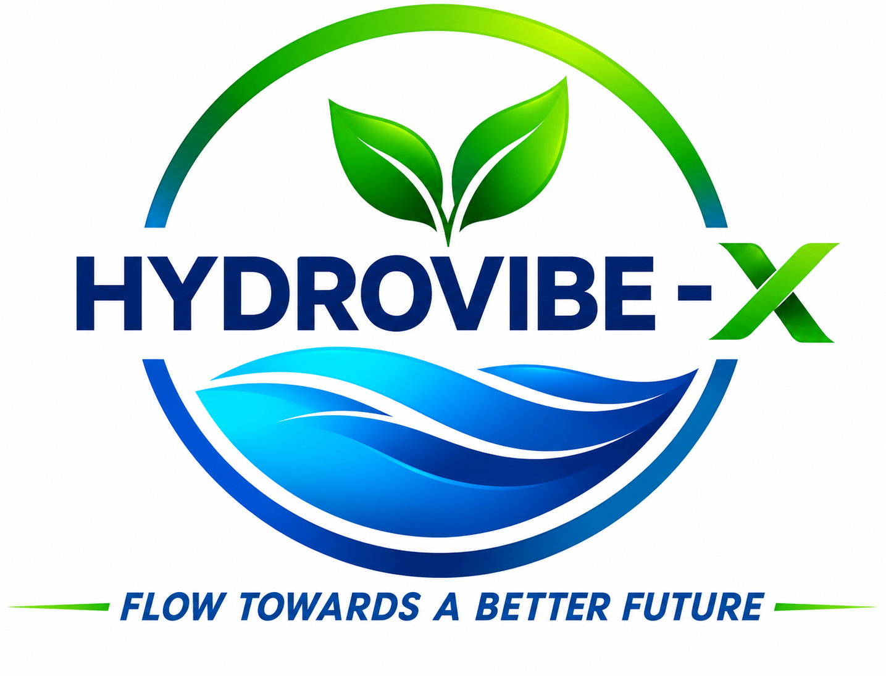
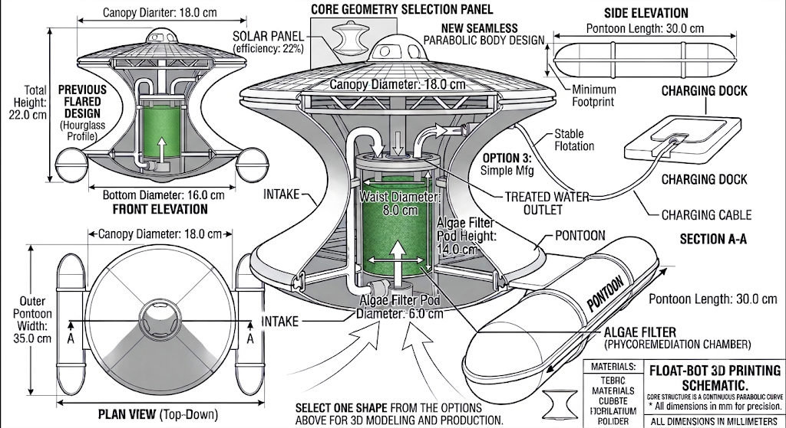

Intake
Water enters the system for treatment.

Explore the conceptMeet HYDROVIBE-X: a floating drone concept exploring algae-based treatment, modular filtration, and water-quality monitoring in one carefully designed system.
The concept moves across a lake or pond, drawing water through a sequence of removable treatment chambers. A replaceable algae cartridge sits at the heart of the proposed phycoremediation stage.
Follow the water pathWater moves through distinct stages that can be inspected, maintained, and evaluated independently.
Water enters the system for treatment.
A removable stage catches larger debris.
Selected algae are explored for nutrient uptake.
Additional filtration depends on the target.
Compare readings before water is released.
This is a proposed treatment concept, not a drinking-water certification. Effectiveness and safe operation must be verified for each contaminant and test condition.
Numbered marks on the drawing match the color-coded function legend beside it.

Dimensions and functions shown are part of the proposed design and require prototype validation.